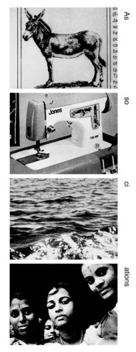
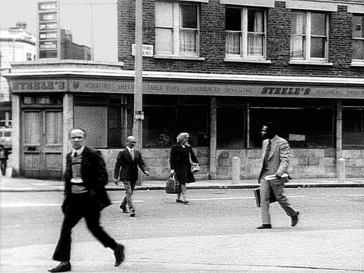
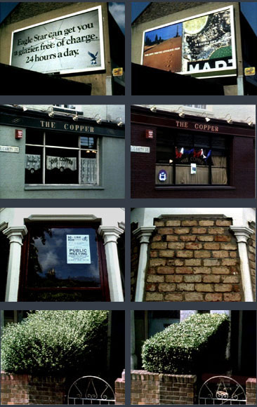

-
Pragmatic Illusionism: John Smith on DVD
by Colin Beckett October 17, 2011
The Black Tower (1987) is the closest thing to a straightforward narrative film that John Smith ever made. The story goes something like this: A man notices an ominous tower looming over a street near his home. He doesn’t think much of it at first, but begins to see it everywhere, eventually coming to believe that it’s following him throughout London. He starts having terrible dreams in which he’s confined to a pitch-black space that he can only assume to be the tower’s interior. He’s unable to assimilate these strange visions into his everyday reality; the sight of the tower begins to induce in him a dread so terrible that he shuts himself inside his apartment. Mysteriously, an ambulance arrives and brings him to the hospital. He explains everything to the doctors, who gradually get him to accept that the tower exists only in his mind. He returns to his life, taking a trip to the countryside with some friends. Things there are comfortable for a while, but during a solitary walk he glances upward and spots the tower again, miles away from the streets on which it had originally haunted him. He knows it’s not real, but he can’t help himself. Now, he approaches the tower and enters it. He dies.
These events are related by the disembodied voice of the main character. For most of film, all we see are static shots of the tower. These matter-of-fact images give concrete form to the narrator’s visions. Plainspoken and direct, they appear insulated from the paranoid, oneiric ambiance of the soundtrack, seeming to confirm the reality of what we’re told. One longer sequence contains increasingly baroque effects of camera angle and scale that remind us of the medium’s essentially duplicitous nature; in the scenes that bracket it, the tower is before us again and again, dreadful in its opacity. It seems incapable of resolving into focus, voiding the light that surrounds it: an open wound in the skyline. Watching the film for the first time, I wondered how Smith had fashioned the proliferating towers, imagining some elaborate optical printing process. In fact, he just photographed one tower from several different angles, covering his tracks with careful framing: a simple trick. Nicky Hamlyn describes a similar viewing experience, writing, “The utter simplicity and transparency of this strategy forces the viewer to confront his own gullibility.”
Premised on one of the most elementary forms of cinematic illusionism, The Black Tower has much to say about film’s deceptions. You could understand its story as a parable of narrative film viewing, the fantasies that cinematic representation engender being, like the eponymous tower, so seductive that they continue to do psychic harm even after we know better.
Lux Moving Image, the UK-based arts agency, recently released a 3-DVD box set of John Smith’s movies, allowing us to look closely at the filmmaker’s deceptively simple illusions.
A student of experimental filmmaker Guy Sherwin at the Royal College of Art, Smith found his way to the London Filmmakers’ Co-Operative in the early 1970s. Modeled on the New York Filmmakers’ Coop, London Filmmakers’ had begun in 1968 by screening films at Better Books, a central node of the London Underground. By the time Smith joined the LFMC, the group had their own space at the Institute for Research in Art and Technology, in Camden Town, where they were now producing films in-house and distributing them widely, as well as holding public screenings. A second wave of filmmakers associated with what was called structural-materialist cinema,, led by Peter Gidal and Malcolm Le Grice, had eradicated the last traces of hippie frivolity from the Co-Op. Structural-materialists rejected the idea that film can represent or document the world; they attempted to marry Modernist rhetoric about medium-specificity and “materiality” — according to which art’s aim is to highlight its own essential conditions — with Marxist historical materialism, claiming both aesthetic and political necessity for their methods. The Co-Op’s most stringent structural-materialists employed arbitrary images, using them to create dynamic relations between film’s various properties, forcing the viewer to continually re-evaluate what’s happening on screen, activating mental processes unique to film-viewing. They wanted film to be of the world, not about the world.
This kind of thinking impressed itself deeply into Smith, and many of his films can be understood in these terms. Associations (1975) exemplifies the structural- materialist ethos, with Smith building a rebus from magazine clippings that first illustrates, and then diverges from, the text being read on the soundtrack, the content of both sound and image meaningless except in conjunction.
The Girl Chewing Gum (1976), likely Smith’s most widely seen film, was made shortly after Associations, but it shows cracks developing in his commitment to anti-illusionism. The film begins with the camera trained on a drab urban street corner. An alarm bell rings, and a voice off-screen seems to be directing the action, shouting out cues in haughty tones. His demands are quickly met by the figures populating the frame, actors apparently responding to the unseen director. As the film continues, a nagging sense of unreality emerges. “Now”, the unseen director intones, “I want everyone to sink down slowly…”: the camera pans up, the absurd literalness of this translation confirming our doubts. It becomes clear that this scene has been recorded vérité-style, the sound added afterward.
As the film continues Smith’s voice-over becomes increasingly detailed. It moves first from direction to description, pitting the denotative clarity of the word against the simultaneity of the moving image in a contest to control our perception of the urban scene before us. But as the particulars accrue, the narrator oversteps his bounds, giving information that the image alone could not possibly have generated, landing the text in the domain of fiction once again. Throughout, Smith stays closely attuned to his spectators’ expectations, allowing us just enough time to grasp the implications of each development before adding something new, consistently altering and complicating our sense of what we’re actually seeing, producing the participatory viewing dynamic typical of structural-materialist film.
Smith continued to make films that play this game of interpretive hide-and-seek. Om (1986) consists of a single four-minute-long shot of a man with a shaved head, over the course of which our perception of him transforms from Buddhist monk to skinhead through the addition, subtraction, and identification of various props. In The Kiss (1999), made with Ian Bourn, what at first appears to be a painting of a lily begins to move, expanding further and further, until a heretofore-transparent piece of glass cracks above it, revealing the means by which this startling image was created.
Smith has persisted in defining himself as an anti-illusionist, telling Cate Elwes earlier this decade that his films “are based on the premise that pro-filmic events are secondary to filmic construction in the creation of meaning, that if you look hard enough all meanings can be found or produced close to home.”
But in many of his most important works, Smith ventured far outside the boundaries structural-materialists had set for a purist, non-representational cinema. The narrative of The Black Tower is not just a perfunctory fable, but a truly immersive account of prodromal insanity, a Gothic descent into madness; Adrian Danks compared the film to Poe. The elaborate, shifting contest that The Girl Chewing Gum sets up is not between illusion and its opposite, but between two kinds of illusion, fiction and documentary. Here, Smith uses the minimalist idiom of structural-materialist film not to explore cinema’s essential conditions but rather its contingent ones: the uses to which illusionism is put, its codes and conventions.
The Girl Chewing Gum luxuriates in its depiction of an actual London street corner where, as Nicky Hamlyn put it, “genteel Islington gives way to Hackney — ‘England’s poorest borough’ — in a haze of heavy lorry fumes”. There is a moment before the film’s only cut in which the camera deliberately lingers for the first time, holding in silence on the people in line at a movie theater, as if to marvel at the film image’s basic indexical quality, seeming to say: in spite of all the distortions, here were real people at a real place in real time. As he continued making films, Smith inched closer and closer to embracing documentary without caveat. The Lux set traces a trajectory that begins with Associations and lands in the realm of relatively straightforward non-fiction, concluding with a series of video diaries in which Smith addresses his audience directly.
In the years between the Co-Op and the video diaries, Smith’s documentary or quasi-documentary works depict the world with the louvers half-open, holding cinema’s materials and the illusions they yield together in deep focus. In films like Shepherd’s Delight (1984), Blight (1996), and Lost Sound (2001), his cinematography is characterized by a close, selective framing that portrays some small shard of reality whose tight contours insinuate how much has been excluded. By metonymy, Smith fabricates documentary’s bracing sense of being there without effacing his own machinations. This effort culminates in Slow Glass (1991), Smith’s most complex and rewarding film.
Once again, in Slow Glass, the voice of a fictional character occupies the soundtrack. Amidst the noise of a busy local pub, we catch a middle-aged glazier — played by videomaker and Smith collaborator Ian Bourn — in the middle of a rambling disquisition on the history of glass-making, which at times veers into lamentations for the Britain of his childhood and abstract inquiries into the nature of memory. The montage forms a dense latticework of close-ups, disorienting perspectives, optically printed composites, and trick shots — most frequently, one in which we see a building undergo years of change in a single cut. These shots were achieved, Smith told Brian Frye, with the aid of a gate focuser, a very sturdy tripod, and some well-placed nails for markers. Over the course of the film, we witness the stages of glass production in reverse, interspersed with pub scenes, journeys through the changing landscape of East London, and staged childhood vignettes marked by the stillness and unreality of memory.
The film teaches much about glass itself — making us aware of its near-invisible omnipresence — but it does so in order to produce a structuring metaphor for the myriad ways that our experience of the world is mediated by the processes of thought, vision, and memory. The most remarkable thing about glass, the glazier repeatedly insists, is that it exists as an amorphous solid, never crystallizing, refusing stability. It thus provides an obvious analogue to time and the impossibility of stasis. The film’s images of childhood and London fill in the specifics of this common observation, conjuring both the ecstasy of metamorphosis and the sense of loss it provokes.
Slow Glass brings its concern with time’s passing into a political register, documenting the alterations London was undergoing in 1991 in preparing for the construction of the M11 Link Road, a bypass that would connect two of the city’s major highways. The link road was set to bisect Leytonstone, the neighborhood in which Smith had spent most of his adult life and where, or near to where, he had shot almost all of his films. When he asserted that “all meanings can be found or produced close to home,” he meant it literally. Smith and his neighbors demonstrated bitterly against the construction of the link road that would force many of them from their homes. Slow Glass implicitly participates in this protest, with Smith scrambling to record what remained, but the fatalistic cast of its larger design suffocates this function.
In The Hotel Diaries (2001-2007), which comprise the final disc of the Lux set, Smith makes his politics explicit, and his anger more distinct. Frozen War (2001), the first of the eight videos that make up the series, begins with Smith himself deeply disturbed by a tear in the fabric of televisual illusion. It is the evening that NATO began bombing Afghanistan in the wake of the September 11th attacks, and Smith returns to his hotel room in Cork to find that the BBC’s 24-hour news service has somehow paused, the newscaster frozen and the onscreen clock stopped. He turned on his video camera to document this uncanny moment, and he takes the opportunity to speak extemporaneously in strident opposition to the campaign. As the War on Terror continued, Smith kept his Hotel Diaries along with it, producing eight altogether — seven shot in various cities across Europe, and one split between Jerusalem and Bethlehem — something almost like on-scene reporting, an acknowledgement that not all meanings could be produced so close to home. These rather uncomplicated diary videos take a straightforward approach to representation; Smith telegraphs his political convictions with the most expedited means available.
But expediency is not the only thing that beckoned Smith to this directly communicative form. Smith has always accepted many of the basic tenets of the structural-materialist critique of filmic illusionism: that meaning is constructed through editing and is manacled to dominant cultural norms; that editing, basic juxtaposition, is the building block of cinematic experience to which the author should constantly return and draw attention; that the primary relationship of every movie is one not between characters but between the screen and the audience. Smith, however, took anti-illusionism not as an interdiction, but as a lesson in humility, employing its techniques as generative constraints. His best movies devour their own boundaries and turn ever outward: toward life and the stories by which we try to understand it. Accepting the limitations of his chosen media, Smith depicts the world anyway, forging, at times, a means by which to depict it better, crafting a deeply humane form of avant-garde cinema.